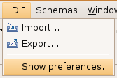
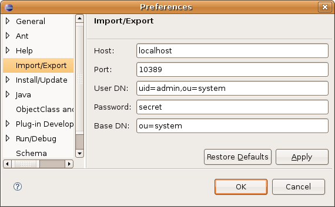

To access the Import/Export preferences, select Show preferences... in the LDIF menu.
Preferences are also available through Window > Preferences > Import/Export

Use this preference page to change the settings used to connect to the LDAP server that the servers uses.
| Option | Description | Default |
|---|---|---|
| Host | Name or address of a local IP interface to be used by the server. | localhost |
| Port | IP port for server to listen on. | 10389 |
| User DN | DN of the user to use to connect | uid=admin,ou=system |
| Password | Password associated with the user | secret |
| Base DN | The Base DN to connect to | ou=system |
Here is what the Import/Export preferences page looks like:
